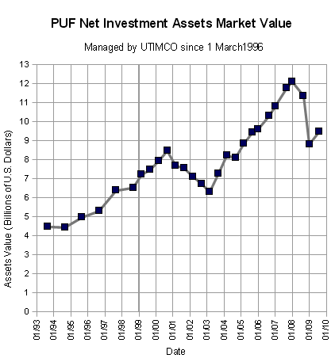
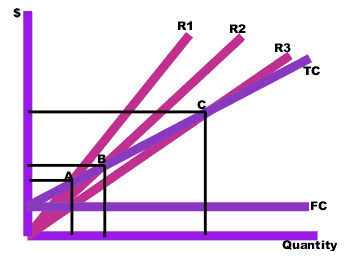
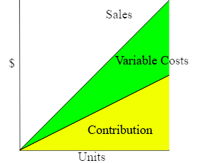
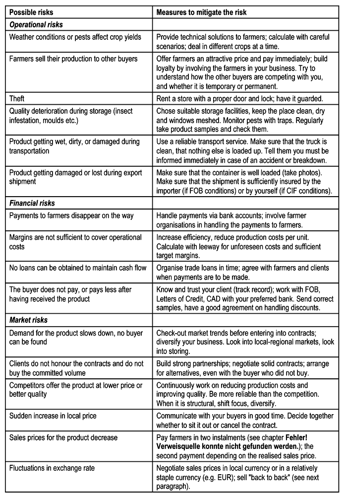
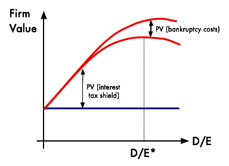

Capital Structure is the way a company finances its assets through a combination of equity and liabilities.
Describe how a company's capital structure can influence its value and investment decisions
Capital structure refers to the way a corporation finances its assets through some combination of equity, debt, or hybrid securities. A firm's capital structure is the composition or 'structure' of its liabilities. For example, a firm that sells 20 billion dollars in equity and 80 billion dollars in debt is said to be 20% equity-financed and 80% debt-financed. The firm's ratio of debt to total financing, 80% in this example, is referred to as the firm's leverage. In reality, capital structure may be highly complex and include dozens of sources. Gearing Ratio is the proportion of the capital employed by the firm which comes from outside of the business, such as by taking a short term loan. Capital Structure shows how a company's assets are built out of debt and equity.
Modigliani and Miller created a theory of Capital Structure in a perfect market. There are several qualifications for a "perfect market":
Modigliani and Miller made two findings under these conditions:
This means, as leverage increases, while the burden of individual risks is shifted between different investor classes, total risk is conserved and hence no extra value created.
Their analysis was extended to include the effect of taxes and risky debt. Under a classical tax system, the tax deductibility of interest makes debt financing valuable; the cost of capital decreases as the proportion of debt in the capital structure increases. The optimal structure, then would be to have virtually no equity at all.
If capital structure is irrelevant in a perfect market, then imperfections which exist in the real world must be the cause of its relevance. The theories below try to address some of these imperfections, by relaxing assumptions made in the M&M model.
Trade-off theory allows bankruptcy cost to exist. It states that there is an advantage to financing with debt (the tax benefits of debt) and that there is a cost of financing with debt (the bankruptcy costs and the financial distress costs of debt). The marginal benefit of further increases in debt declines as debt increases, while the marginal cost increases, so that a firm that is optimizing its overall value will focus on this trade-off when choosing how much debt and equity to use for financing. Empirically, this theory may explain differences in Debt/Equity ratios between industries, but it doesn't explain differences within the same industry.
Pecking Order Theory tries to capture the costs of asymmetric information. It states that companies prioritize their sources of financing (from internal financing to issuing shares of equity) according to least resistance, preferring to raise equity for financing as a last resort. Internal financing is used first. When that is depleted, debt is issued. When it is no longer sensible to issue any more debt, equity is issued.
This theory maintains that businesses adhere to a hierarchy of financing sources and prefer internal financing when available, while debt is preferred over equity if external financing is required. Thus, the form of debt a firm chooses can act as a signal of its need for external finance.
The Pecking Order Theory is popularized by Myers (1984), when he argues that equity is a less preferred means to raise capital because when managers (who are assumed to know better about true condition of the firm than investors) issue new equity, investors believe that managers think that the firm is overvalued and managers are taking advantage of this over-valuation. As a result, investors will place a lower value to the new equity issuance.
The optimal capital structure is the mix of debt and equity that maximizes a firm's return on capital, thereby maximizing its value.
Explain the influence of a company's cost of capital on its capital structure and therefore its value
Capital structure is the way a corporation finances its assets, through a combination of debt, equity, and hybrid securities. In short, capital structure can be termed a summary of a firm's liabilities by categorization of asset sources. In a simple example, if a company's assets come from a \$20 million equity issuance and lending that amounts to \$80 million, the capital structure can be said to be 20% equity and 80% debt. While equity results from the selling of ownership shares, debt is termed "leverage. " Therefore, a term that has issued no debt or bonds is said to not be leveraged. This is a simplistic view, because in reality a firm's capital structure can be highly complex and include many different sources. Captial structure is the assignment of the sources of company assets into equity or debt securities.
The Modigliani-Miller theorem, proposed by Franco Modigliani and Merton Miller, forms the basis for modern thinking on capital structure (though it is generally viewed as a purely theoretical result, since it disregards many important factors in the capital structure decision). The theorem states that in a perfect market, how a firm is financed is irrelevant to its value. However, as with many theories, it is difficult to use this abstract theory as a basis to evaluate conditions in the real world, where markets are imperfect and capital structure will indeed affect the value of the firm. Actual market considerations when dealing with capital structure include bankruptcy costs, agency costs, taxes, and information asymmetry.
One of the major considerations that overseers of firms must take into account when planning out capital structure is the cost of capital. For an investment to be worthwhile, the expected return on capital must be greater than the cost of capital. A company's securities typically include both debt and equity; therefore, one must calculate both the cost of debt and the cost of equity to determine a company's cost of capital. The weighted average cost of capital multiplies the cost of each security by the percentage of total capital taken up by the particular security, and then adds up the results from each security involved in the total capital of the company.
Because of tax advantages on debt issuance, such as the ability to deduct interest payments from taxable income, issuing debt will typically be cheaper than issuing new equity. At some point, however, the cost of issuing new debt will be greater than the cost of issuing new equity. This is due to the fact that adding debt increases the default risk and, thus, the interest rate that the company must pay in order to borrow money. This increased default risk can also drive up the costs for other sources (such as retained earnings and preferred stock). Management must identify the "optimal mix" of financing, which is the capital structure where the cost of capital is minimized so that the firm's value can be maximized.
Taxation implications which change when using equity or debt for financing play a major role in deciding how the firm will finance assets.
Explain how taxes can influence a company capital structure
Tax considerations have a major effect on the way a company determines its capital structure and deals with its costs of capital. A company's decision makers must take taxes into consideration when determining a firm's capital structure.
Miller and Modigliani assume that in a perfect market, firms will borrow at the same interest rate as individuals, there are no taxes, and that investment decisions are not changed by financing decisions. This leads to a conclusion that capital structure should not affect value.
When the theory is extended to include taxes and risky debt, things change. Under a classical tax system, the tax deductibility of interest makes debt financing valuable; that is, the cost of capital decreases as the proportion of debt in the capital structure increases. The optimal structure then, would be to have virtually no equity at all.
However, we see that in real world markets capital structure does affect firm value. Therefore, we see that imperfections exist; often a firm's optimal structure does not involve having one hundred percent leveraging and no equity whatsoever. There is much debate over how changing corporate tax rates would affect debt usage in capital structure. In general, since dividend payments are not tax deductible, but interest payments are, one would think that, theoretically, higher corporate tax rates would call for an increase in usage of debt to finance capital, relative to usage of equity issuance. However, since many things fall into tax applicability, including firm location and size, this is a generality at best.
There are also different kinds of debt that can be used, and they may have different deductibility and tax implications. That is why, while many believe that taxes don't really affect the amount of debt used, they actually do. In the end, different tax considerations and implications will affect the costs of debt and equity, and how they are used, relative to each other, in financing the capital of a company.
Cost of capital is important in deciding how a company will structure its capital so to receive the highest possible return on investment.
Describe the influence of a company's cost of capital on its capital structure and investment decisions
One of the major considerations that overseers of firms must take into account when planning out capital structure is the cost of capital.
Cost of capital is an important way of determining whether or not a firm is a worthwhile investment.
For an investment to be worthwhile, the expected return on capital must be greater than the cost of capital. A company's securities typically include both debt and equity, so one must therefore calculate both the cost of debt and the cost of equity to determine a company's cost of capital. The weighted average cost of capital multiplies the cost of each security by the percentage of total capital taken up by the particular security, and then adds up the results from each security involved in the total capital of the company.
If there were no tax advantages for issuing debt, and equity could be freely issued, Miller and Modigliani showed that, under certain assumptions, the value of a leveraged firm and the value of an unleveraged firm should be the same.
Because of tax advantages on debt issuance, such as the ability to deduct interest payments from taxable income, it will be cheaper to issue debt rather than new equity. At some point, however, the cost of issuing new debt will be greater than the cost of issuing new equity. This is because adding debt increases the default risk and thus the interest rate that the company must pay in order to borrow money. By utilizing too much debt in its capital structure, this increased default risk can also drive up the costs for other sources (such as retained earnings and preferred stock). Management must identify the "optimal mix" of financing–the capital structure where the cost of capital is minimized so that the firm's value can be maximized.
The marginal cost of capital is the cost needed to raise the last dollar of capital, and usually this amount increases with total capital.
Describe how the cost of capital influences a company's capital budget
The marginal cost of capital is calculated as being the cost of the last dollar of capital raised. Generally we see that as more capital is raised, the marginal cost of capital rises . This happens due to the fact that marginal cost of capital generally is the weighted average of the cost of raising the last dollar of capital. Usually, we see that in raising extra capital, firms will try to stick to desired capital structure. Usually once sources are depleted they will have to issue more equity. Since the cost of issuing extra equity seems to be higher than other costs of financing, we see an increase in marginal cost of capital as the amounts of capital raised grow higher. The Marginal Cost of Capital is the cost of the last dollar of capital raised. It is an important consideration the firm must take into account when making corporate decisions.
The marginal cost of capital can also be discussed as the minimum acceptable rate of return or hurdle rate. The investment in capital is logically only a good decision if the return on the capital is greater than its cost. Also, a negative return is generally undesirable. As a result, the marginal cost of capital often becomes a benchmark number in the decision making process that goes into raising more capital. If it is determined that the dollars invested in raising this extra capital could be allocated toward a greater or safer return if used differently, according to the firm, then they will be directed elsewhere. For this we must look into marginal returns of capital, which can be described as the gains or returns to be had by raising that last dollar of capital.
Trade-off considerations are important because they take into account the cost and benefits of raising capital through debt or equity.
Describe the balancing act between debt and equity for a company as described by the "trade-off" theory
The trade-off theory of capital structure refers to the idea that a company chooses how much debt finance and how much equity finance to use by balancing the costs and benefits. It is often set up as a competitor theory to the pecking order theory of capital structure. An important purpose of the theory is to explain the fact that corporations are usually financed partly with debt and partly with equity. It states that there is an advantage to financing with debt—the tax benefits of debt, and there is a cost of financing with debt—the cost of financial distress including bankruptcy. Trade-off considerations are important factors in deciding appropriate capital structure for a firm since they weigh the cost and benefits of extra capital through debt vs. equity.
The marginal benefit of further increases in debt declines as debt increases, while the marginal cost increases. Of course, using equity is initially more expensive than debt because it is ineligible for the same tax savings, but becomes more favorable in comparison to higher levels of debt because it does not carry the same financial risk. Therefore, a firm that is optimizing its overall value will focus on this trade-off when choosing how much debt and equity to use for financing.
Another trade-off consideration to take into account is that the while interest payments can be written off, dividends on equity that the firm issues usually cannot. Combine that with the fact that issuing new equity is often seen as a negative signal by market investors, which can decrease value and returns.
As more capital is raised and marginal costs increase, the firm must find a fine balance in whether it uses debt or equity after internal financing when raising new capital. Therefore, one would think that firms would use much more debt than they do in reality. The reason they do not is because of the risk of bankruptcy and the volatility that can be found in credit markets—especially when a firm tries to take on too much debt. Therefore, trade off considerations change from firm to firm as they impact capital structure.
Signaling is the conveyance of nonpublic information through public action, and is often used as a technique in capital structure decisions.
Explain how a company's attempts at signaling can affect its capital structure
In economics and finance, signaling is the idea that a party may indirectly convey information about itself, which may not be public, through actions to other parties. Signaling becomes important in a state of asymmetric information (a deviation from perfect information), which says that in some economic transactions inequalities in access to information upset the normal market for the exchange of goods and services. In his seminal 1973 article, Michael Spence proposed that two parties could get around the problem of asymmetric information by having one party send a signal that would reveal some piece of relevant information to the other party. That party would then interpret the signal and adjust its purchasing behavior accordingly -- usually by offering a higher or lower price than if the signal had not been received. In general, the degree to which a signal is thought to be correlated to unknown or unobservable attributes is directly related to its value. A basic example of signaling is that of a student to a potential employer. The degree the student obtained signals to the employer that the student is competent and has a good work ethic -- factors that are vital in the decision to hire.>Education credentials, such as diplomas, can send a positive signal to potential employers regarding a workers talents and motivation.
In terms of capital structure, management should, and typically does, have more information than an investor, which implies asymmetric information. Therefore, investors generally view all capital structure decisions as some sort of signal. For example, let us think of a company that is issuing new equity. If a company issues new equity, this generally dilutes share value. Since the goal of the firm is generally to maximize shareholder value, this can be a viewed as a signal that the company is facing liquidity issues or its prospects are dim. Conversely, a company with strong solvency and good prospects would generally be able to obtain funds through debt, which would generally take on lower costs of capital than issuing new equity. If a company fails to have debt extended to it, or the company's credit rating is downgraded, that is also a bad signal to investors. While the issuance of equity does have benefits, in the sense that investors can take part in potential earnings growth, a company will usually choose new debt over new equity in order to avoid the possibility of sending a negative signal.
Managers will have their actions influenced by their firm's capital structure and the resources that it allows them to use.
Explain how capital structure can minimize a company's agency problem
Managers who make decisions about the firm's corporate behavior will have their actions influenced by capital structure and the resources that it allows them to use.
Managerial finance is the branch of the industry that concerns itself with the managerial significance of finance techniques. It is focused on assessment rather than technique. However, this process can be tainted by the fact that managers may often act in their own best interests instead of those of investors of the firm. This is known as an agency dilemma.
Adopting the right kind of capital structure can help combat this kind of problem, however. When the capital structure draws heavily on debt, then this leaves less money to be distributed to managers in the form of compensation, as well as free cash to be used on behalf of the business. Managers have to be more careful with the resources they are given to use with the purpose of running the firm successfully, since they have to produce enough income to pay back this debt by a certain date, with interest. When managers work with equity heave capital structure they have a little more leeway, and while shareholders may be upset or suffer because of fluctuations in the value of the firm, managers may find ways to make sure their compensation can have some immunity from the market value of the firm.
Therefore, firms that have debt-heavy capital structures have managers with goals that tend to be more aligned with those of the shareholder. The limitation of free cash that managers have provides incentive for them to make decisions for the company that will grow the firm in value and increase the cash they have available to them to pay back debt, pay back into the firm, and compensate themselves.
In corporate finance pecking ordering consideration takes into account the increase in the cost of financing with asymmetric information.
Explain the benefits and shortcomings of using the "pecking order" theory to evaluate a company's value
The pecking order of investors or credit holders in a company plays a part in the way a company decides to structure it's capital. Pecking order theory basically states that the cost of financing increases with asymmetric information. Financing comes from internal funds, debt, and new equity. When it comes to methods of raising capital, companies will prefer internal financing, debt, and then issuing new equity, respectively. Raising equity, in this sense, can be viewed as a last resort.
The pecking order theory was popularized by Stewart C. Myers when he argues that equity is a less preferred means to raise capital because managers issue new equity (who are assumed to know better about true conditions of the firm than investors). Investors believe that managers overvalue the firms and are taking advantage of this over-valuation. As a result, investors will place a lower value to the new equity issuance. This theory maintains that businesses adhere to a hierarchy of financing sources and prefer internal financing when available, and debt is preferred over equity if external financing is required. Thus, the form of debt a firm chooses can act as a signal of its need for external finance. This sort of signalling can affect how outside investors view the firm as a potential investment, and once again must be considered by the people in charge of the firm when making capital structure decisions.
Tests of the pecking order theory have not been able to show that it is of first-order importance in determining a firm's capital structure. However, several authors have found that there are instances where it is a good approximation of reality. On the one hand, Fama, French, Myers, and Shyam-Sunder find that some features of the data are better explained by the Pecking Order than by the trade-off theory. Goyal and Frank show, among other things, that Pecking Order theory fails where it should hold, namely for small firms where information asymmetry is presumably an important problem.
In corporate finance, a "window of opportunity" is the time when an asset or product which is unattainable will become available.
Identify a window of opportunity
In corporate finance, a "window of opportunity" basically is the idea of a time when an asset or product that is unattainable will become available. It can be extended to a time when a certain product will be attainable at a certain price or from an opposite perspective, the unique time a party will be able to sell a certain product at its highest price point in order to get a maximum return on investment.
For example, when a firm issues an IPO, which allows a company to tap into a wide pool of potential investors to provide itself with capital for future growth, repayment of debt, or working capital. A company selling common shares is never required to repay the capital to its public investors. Those investors must endure the unpredictable nature of the open market to price and trade their shares. However, for a company with massive growth potential, the IPO may be the lowest price that the stock is available for public purchase. Therefore, the IPO presents a window of opportunity to the potential investor to get in on the new equity while it is still affordable and a greater return on investment is attainable. From the firm side, the opportunity to purchase a new plant or real estate at a cheap cost or lower lending rates also presents an opportunity to attain a greater investment on assets used in production. Management of a firm must take this into account in order to keep costs low and returns high, in order to make the firm look like the best possible investment for creditors of all types.
Bankruptcy occurs when an entity cannot repay the debts owed to creditors and must take action to regain solvency or liquidate.
Describe how the risk of a corporate bankruptcy can influence a company's cost of capital
Bankruptcy is a legal status of an insolvent person or an organization, that is, one who cannot repay the debts they owe to creditors . In most jurisdictions bankruptcy is imposed by a court order, often initiated by the debtor. Generally, a debtor declares bankruptcy to obtain relief from debt. This is accomplished either through a discharge of the debt or through a restructuring of the debt. Usually, when a debtor files a voluntary petition, his or her bankruptcy case commences.
In the U.S. firms that go bankrupt normally file for Chapter 7 or 11. Chapter 7 involves basic liquidation for businesses. It is also known as straight bankruptcy. Chapter 7 is the simplest and quickest form of bankruptcy available. Chapter 11 involves rehabilitation or reorganization and is known as corporate bankruptcy. It is a form of corporate financial reorganization that typically allows companies to continue to function while they follow debt repayment plans. When liquidation occurs one must remember that bondholders and other lenders are paid back first before equity holders. Usually, there is little or no capital left over for common shareholders.
When gaining the financing for capital, firms must take the possibility of bankruptcy into consideration. This is especially important when looking into financing capital through debt. If potential creditors sense that bankruptcy could be likely firms will have a harder time acquiring financing and even if they do, it will probably come at a high interest rate that significantly increases the cost of debt. These firms will have to rely heavily on equity, which once again can be seen as a negative signal about the firm's current state. It can put a downward pressure on equity values. This places a high cost on raising capital, with potential for low returns. Therefore, it is best that the firm take into consideration any possibilities of bankruptcy and work to minimize them when designing capital structure.
Bankruptcy allows debtors to either reorganize and restructure debts or liquidate assets to be used to pay off creditors.
Differentiate between the different types of bankruptcy
Individuals or entities undergoing financial distress may be forced to consider bankruptcy. Bankruptcy is the legal status of an insolvent person or organization, that is, one who cannot repay the debts they owe to creditors. The principal focus of insolvency legislation and business debt restructuring practices is not on the elimination of insolvent entities but on remodeling the financial and organizational structure of debtors experiencing financial distress, so as to permit the rehabilitation and continuation of their business. The bankruptcy system generally endeavors to reward creditors who continue to extend financing to debtors and discourage creditors from accelerating their debt collection efforts.
Bankruptcy cases are either voluntary or involuntary. In voluntary bankruptcy cases, which account for the overwhelming majority filed, debtors petition the bankruptcy court. In involuntary bankruptcy cases, creditors file the petition. Commencement of a bankruptcy case creates an estate. The estate consists of all property interests of the debtor at the time of case commencement, subject to certain exclusions and exemptions.
The United States District Courts have jurisdiction over bankruptcy matters; however, each district court may "refer" bankruptcy matters to the Bankruptcy Court. Most district courts have a standing "reference" order to that effect, so that all bankruptcy cases are handled by the Bankruptcy Court. The US Attorney General appoints trustees for each of the 21 geographical regions in the US. These trustees maintain and supervise a panel of private trustees for Chapter 7 bankruptcy cases. Furthermore, a US trustee may be heard on any issue in any bankruptcy case, except for filing a Chapter 11 plan of reorganization.
The Bankruptcy Code imposes an automatic stay at the moment a bankruptcy petition is filed. The automatic stay generally prohibits the commencement, enforcement, or appeal of actions and judgments against a debtor for the collection of a claim that arose prior to the filing of the bankruptcy petition. In other words, as soon as a petition is filed, a debtor is entitled to all the provisions of the Bankruptcy Code. The automatic stay also prohibits collection actions and proceedings directed toward property of the bankruptcy estate itself.
A secured creditor may be allowed to take the applicable collateral if the creditor first obtains permission from the court. The court must either grant permission or provide adequate protection to the secured creditor that the value of their collateral will not decrease during the stay.
Entities seeking relief under the Bankruptcy Code may file a petition for relief under a number of different chapters of the Code, depending on the circumstances. A case is typically referred to by the chapter under which the petition is filed.
Liquidation under a Chapter 7 filing is the most common form of bankruptcy. Under Chapter 7, a trustee collects the non-exempt property of the debtor, sells it, and distributes the proceeds to the creditors. Because each state allows for debtors to keep essential property, most Chapter 7 cases are "no asset" cases - meaning that there are not sufficient non-exempt assets to fund a distribution to creditors.
A Chapter 9 bankruptcy is available only to municipalities, and is a form of reorganization, not liquidation. Because municipalities are entities of state governments, the power of Congress to adjust debts through bankruptcy is limited. Municipalities' ability to re-write collective bargaining agreements is much greater than in a corporate Chapter 11 bankruptcy, and can trump state labor protections, allowing cities to renegotiate unsustainable pension or other benefits packages negotiated in flush times.
Bankruptcy under Chapter 11, 12, or 13 requires more complex reorganization, and involves allowing the debtor to keep some or all of his or her property and to use future earnings to pay off creditors. Individuals usually file Chapter 7 or Chapter 13. Chapter 12 is similar to Chapter 13, but it provides extra benefits to "family farmers" and "family fisherman" in certain situations. Chapter 12 generally has more generous terms for debtors than a comparable Chapter 13 case would have available.
Chapter 11 is commonly the form of re-organizational bankruptcy frequently entered into by businesses. Debtors may "emerge" from a Chapter 11 bankruptcy within a few months or several years, depending on the size and complexity of the bankruptcy. The Bankruptcy Code accomplishes this objective through the use of a bankruptcy plan. With some exceptions, the plan may be proposed by any party in interest. Interested creditors then vote for a plan.
To avoid the negative impacts of bankruptcy, individuals and companies in financial distress can implement certain financial management techniques.
Devise a management plan when a company is in financial distress
Financial Management before and during Bankruptcy is an effective method for companies and individuals to remedy financial distress and insolvency. However, it has the disadvantage of making it more difficult for an individual to borrow in the future and companies that are reorganized and not dissolved face the risk of higher costs of capital for future operations after emerging from bankruptcy. To avoid the negative impacts of bankruptcy, individuals and companies in financial distress have a number of bankruptcy alternatives.
Financial distress typically arises when a high amount of fixed or unavoidable costs exists relative to the amount of cash flow or income. In terms of an individual, the most obvious solution is to reduce monthly spending to allow extra cash flow to service debt. For a company, there are many options of avoiding financial distress, including:
If the situation is too dire for such measures and a debtor does not expect to have steady income or property, it may be appropriate to utilize the take no action approach. In other words, the debtor should do nothing since a company with no assets or income cannot undergo garnishment by a creditor. In such cases, however, a creditor could attempt to seize.
A company may reference the Altman Z-score formula in order to determine the likelihood that it will be forced into bankruptcy. The formula may be used to predict the probability that a firm will go into bankruptcy within two years. The Z-score uses multiple corporate income and balance sheet values to measure the financial health of a company. Specifically, the formula references:
For the option of financial management during bankruptcy to exist, a form of bankruptcy allowing reorganization, such as chapter 11, must be used. Chapter 11 requires that all interested parties agree on a plan. Once confirmed, the plan becomes binding and identifies the treatment of debts and operations of the business for the duration of the plan. Under this plan, a debtor may be able to acquire financing and loans on favorable terms by giving new lenders first priority on the business' earnings. The court may also permit debtors to reject and cancel contracts previously agreed to, if this would be financially favorable to the company and its creditors. If the company's debts exceed its assets, the bankruptcy can result in the company's owners being left with nothing. In such a case, the company's creditors may be awarded with ownership of the newly reorganized company. During the period of reorganization, a company must utilize financial management, consisting of the options listed above, in order to emerge from bankruptcy without losing control of operations.
Most creditors are willing to negotiate a settlement to receive a portion of their money and not risk losing everything in a bankruptcy.
Differentiate between debt restructuring and debt consolidation
In general, creditors understand that bankruptcy is an option for debtors with excessive debt. Therefore, most creditors are willing to negotiate a settlement so that they receive a portion of their money, instead of risking losing everything in a bankruptcy. Negotiation is a viable alternative if the debtor has sufficient income, or has assets that can be liquidated so the proceeds can be applied against the debt. Negotiation may also buy the debtor some time to rebuild finances.
Debt restructuring is a process that allows a company or individual in financial distress to reduce and renegotiate its delinquent debts in order to improve or restore liquidity and continue its operations. Out-of court restructurings, also known as workouts, are becoming increasingly common. A debt restructuring is usually less expensive than bankruptcy. The main cost associated with debt restructuring is the time and effort required to negotiate with creditors. Debt restructurings typically involve a reduction of debt and an extension of payment terms. A debtor and creditor could also agree to a debt-for-equity swap, wherein a company's creditors generally agree to cancel some or all of the debt in exchange for equity in the company. These deals typically occur with large companies in financial distress, and often result in these companies being taken over by their principal creditors.
Debt consolidation typically involves borrowing from one lender at a low rate of interest in order to repay a number of higher interest rate obligations. By consolidating debts, the debtor replaces payments to many different creditors with a payment to one creditor. This simplifies the debtor's obligations and can result in faster debt repayment. This is a common course of action for individuals owing large sums on multiple credit cards. Debt consolidation is one option for individuals owing large sums on multiple credit cards.
Operating leverage is a measure of how revenue growth translates into growth in operating income.
Identify ways to increase or decrease a company's operating leverage
Operating leverage can be defined, simply, as the degree to which a firm incurs a combination of fixed and variable costs. Specifically, it is the use of fixed costs over variable costs in production. For example, replacing production workers (variable cost) with robots (fixed cost) . Operating leverage is also a measure of how revenue growth translates into growth in operating income. Factory automation with industrial robots for metal die casting.
Recall that variable costs are those that change alongside the volume activity of a business, and fixed costs are those that remain constant regardless of volume. Utilizing operating leverage will allow variable costs to be reduced in favor of fixed costs; therefore, profits will increase more for a given increase in sales. This is, of course, after the breakeven point has been reached. In other words, because variable costs are reduced, each sale will contribute a higher profit margin to the company.
Fixed costs and variable costs, together, comprise total costs.
As operating leverage increases, more sales are needed to cover the increased fixed costs. Therefore, companies with low output would not benefit from increased operating leverage. Moreover, high levels of fixed costs increase business risk, which is the inherent uncertainty in the operation of the business. Manufacturing companies tend to invest heavily in fixed assets. Therefore, operating leverage is used much more than financial leverage for these types of firms. Operating leverage also increases forecasting risk. Therefore, even a small error made in forecasting sales can be magnified into a major error in forecasting cash flows.
Various measures can be used to interpret operating leverage. These include the ratio of fixed costs to total costs, the ratio of fixed costs to variable costs, and the Degree of Operating Leverage (DOL). All of these measures depend on sales. The ratios of fixed cost to total costs and fixed costs to variable costs tell us that if the unit variable cost is constant, then as sales increase, operating leverage decreases. The DOL tells us, as a percentage, that for a given level of sales and profit, a company with higher fixed costs has a higher contribution margin - the marginal profit per unit sold. Therefore, its operating income increases more rapidly with sales than a company with lower fixed costs (and correspondingly lower contribution margin).
Break-even analysis tells a company how much it needs to sell in order to pay for an investment.
Employ a break even analysis in the context of a company's production process
Recall that operating leverage describes the relationship between fixed and variable costs. Having high operating leverage (having a larger proportion of fixed costs compared to variable costs) can lead to much higher profits for a company. However, increasing operating leverage can also cause substantial losses and puts more pressure on a business. The key to understanding the appropriate amount of operating leverage lies in analysis of the break-even point.
Break-even analysis tells a company how much it needs to sell in order to pay for an investment-- or at what point expenses and revenue are equal.
To find the amount of units required to be sold in order to break even, we simply divide the total fixed costs by the unit contribution margin.
Contribution margin (C) is the unit net revenue (P = price) minus unit variable cost (V = variable cost).
Unit contribution margin can be thought of as the fraction of sales, or amount of each unit sold, that contributes to the offset of fixed costs. It is simply the unit net revenue minus the unit variable cost. When sales have exceeded the break-even point, a larger contribution margin will mean greater increases in profits for a company. By inserting different prices into the break-even formula, you will obtain a number of break-even points-- one for each possible price charged.
R1, R2 and R3 = revenues at different chosen prices. TC = total cost curve. FC = fixed cost curve.
In the above graph, points A, B, and C are the break-even points. The break-even quantity at each selling price can be read off the horizontal axis and the break-even price can be read off the vertical axis.
Break-even analysis helps to provide a dynamic view of the relationships between sales, costs and profits. By providing a better understanding of the amount of success an investment or project must attain, break-even analysis gives companies a benchmark to compare to and an idea about what level of operating leverage will be ideal to generate greater profits.
FC = 1,000. P = 20. VC = 5.
The relationship between fixed and variable costs, when calculated alongside sales volume, enables modeling of operational leverage.
Calculate operating leverage using simple cost equations
Before learning each calculation, it's useful to frame the issue of leverage first. Operating leverage is largely predicated on fixed costs. When fixed costs are high (and variable costs are low), there is quite a bit of risk if the volume of production is low. However, strong increases in revenues will eventually result in substantially higher increase in profitability (as the relative impact of variable costs is lower, and the fixed cost is being divided by higher quantity). The equations below will demonstrate this concept in practice and clarify the concept. What's important to keep in mind is the importance of fixed costs compared to variable costs, and the impact this can have on financial leverage.
Most of the calculations and models for leverage are relatively intuitive when looking at examples.
Let's say you own a business selling coffee. Each cup of coffee you sell costs you about \$0.10. You're want to beat out the competition on price, so you sell your coffees pretty low at \$1.00/coffee. As you can see, your variable cost is only 10% of the overall revenue. The rest of those costs (plus the profit left over) fall into the fixed costs category. After being in business for one year, you have spent a total of \$100,000 acquiring the fixed assets you need (a small location, coffee machines, grinders, chairs, tables, and other random necessities).
If you sell one cup of coffee, you've spent \$100,000.10 and made \$1.00. Not so profitable at this point, as you can see. Your fixed costs compared to your total costs is pretty much 100%. To find our where you'll break even, simply subtract the variable cost from the sale price and divide that by the fixed costs (i.e. how many \$0.90 profits are required to cover the full \$100,000 you owe in fixed costs). Around your 111,111 cup of coffee, you'll find yourself just about even. After this point, pretty much every cup of coffee you sell if 90% profit and 10% cost. Not bad, right? But it'll take a lot of leverage to get there, and therefore there is always the risk you'll go out of business before you make it to your 111,111th cup of coffee.
So, the model for leverage in this case is fixed costs/total costs (or fixed costs/fixed costs + variable costs):
Calculating the overall degree of operating leverage is an important strategic consideration to make as often as possible. The cleanest way to few this is as the overall change in operating income compared to the overall change in sales:
It is also useful to frame this as the operating margin, which compares the overall revenue to the overall operating income. This is more of a snapshot of the current situation, while the DOL above is more in tune with relative changes over time.
At the core of degree of operating leverage is the same concept discussed in the example above. The overall amount gained per new unit sold changes based on the ratio between fixed and variable costs, and this change is what is being modeled what talking about leverage.
After filtering out the fixed costs, increases in volume will increase both the overall variable expense and the overall contribution.
The use of operating leverage can multiply profits when a given break-even point is reached, but it can intensify losses when it is not.
Identify the types of companies that would benefit from higher operating leverage
Leverage, in general, can defined as any technique that is used to multiply gains and losses. By this definition the use of leverage creates risk, and thus will always necessitate a tradeoff between risk and return. As in any situation of this sort, added risk can produce benefits for a firm, but it can also lead to detrimental consequences.
When considering the benefits of operating leverage, it is appropriate to consider the contribution margin, or the excess of sales over variable costs. When variable costs are lower, the contribution of sales to profits will be greater. In other words, a company with higher operating leverage has the potential to generate much larger profits than a company with lower operating leverage. For example, the variable costs for a software company, such as packaging and the cost of various media devices (like CDs), are very low compared to its fixed costs, such as research and development. Therefore, once a certain break-even point is reached, the contribution that sales make to profits is much higher than it would be if a greater portion of the costs were variable.
Problems can arise if a company has very high fixed costs, and if a company has difficulty selling enough units to break even on a particular investment. This is referred to as "business risk," since it arises from the inherent risk of doing business. In other words, the uncertainty of generating a necessary amount of sales is a dilemma all businesses face. Just as the use of operating leverage can lead to greater profits, if a company is able to reach a given, break-even point, so too can the use of leverage drastically multiply losses if that point is not reached.
This chart represents a list of the possible risks involved in running an organic business. Risks such as these affect sales, which in turn affect the amount of operating leverage a company should utilize.
Financial leverage is a tactic to multiply gains and losses, calculated by a debt-to-equity ratio.
Calculate financial leverage, and recognize the core relationship between risk and return
At its simplest, leverage is a tactic geared at multiplying gains and losses. Leveraging existing assets to get exponentially more return can be a risk intensive process, and represents a significant aspect of financial strategy and capital structure. Achieving leverage can enable significant competitive advantages despite the risk, however, as it can accelerate the speed of revenue acquisition exponentially.
The standard way to accomplish leverage is through borrowing, via debt and equity, to invest at a much higher scale than one's current assets would allow. In order to borrow substantial amounts of capital, firms must pursue a variety of financial sourcing and be able to back up their debts with valuable assets (collateral). Even with a great deal of collateral, borrowing big means risking big. Interest rates ensure that the strategic discussions around expanding leverage take into account the risk and return trade offs.
In finance, the best definitions come in equation format. The standard definition of financial leverage is as follows:
In short, the ratio between debt and equity is a strong sign of leverage. As you may already know, equity is ownership of the organization and pays out fairly significant dividends. Debt is often lower cost access to capital, as debt is paid out before equity in the event of a bankruptcy (thus debt is intrinsically lower risk for the investor).
The debt to equity ratio plays a role in the working average cost of capital (WACC) as well, as the overall interest on financing represents the break-even point that must be obtained to achieve profitability in a given venture. WACC is essentially the overall average interest an organization owes on the capital it has borrowed for leverage.
Let's say equity represents 60% of borrowed capital and debt is 40%. This results in a financial leverage calculation of 40/60, or 0.6667. The organization owes 10% on all equity and 5% on all debt. That means that the weighted average cost of capital is (.4)(5) + (.6)(10) - or 8%. For every \$10,000 borrowed, this organization will owe \$800 in interest. Profit must be higher than 8% on the project to offset the cost of interest and justify this leverage.
A word of caution: Leverage is exponentially more risky the more it is utilized. A useful way to view leverage is the overall existing assets of an organization compared to the amount of money they owe. For example, say you own a company with an overall net worth of \$1 million. If you were to be leveraged at a total of 1.5 times (i.e. financed at \$1.5 million), this would put you at some risk. Arguably a reasonable amount.
Before Lehman Brothers went bankrupt, they were leveraged at over 30 times (\$691 billion in financial leverage compared to \$22 billion in assets). A mistake of this scale (on both the lenders and the Lehman Brothers) threatened to topple the global economy itself. It's important to keep responsibility, accountability, and risk in mind when considering leverage options.
This graph illustrates a theoretical firm value maximizing curve when it comes to a debt-to-equity ratio. All this means is that each organization has the ideal balance between debt and equity, and finding the 'sweet spot' is a useful strategic aspect of financial leverage decisions.
The use of financial leverage can positively - or negatively - impact a company's return on equity as a consequence of the increased level of risk.
Describe how leverage can impact a business
Taking on debt, as an individual or a company, will always bring about a heightened level of risk due to the fact that income must be used to pay back the debt even if earnings or cash flows go down. From a company's perspective, the use of financial leverage can positively - or sometimes negatively - impact its return on equity as a consequence of the increased level of risk.
Return on equity is the rate of return on the shareholders' equity of a company's common stock owners. It measures a firm's efficiency at generating profits from every unit of shareholders' equity. Return on equity shows how well a company uses investment funds to generate earnings growth. It can be calculated using the following equation:
The equation used to calculate return on equity.
At an ideal level of financial leverage, a company's return on equity increases because the use of leverage increases stock volatility, increasing its level of risk which in turn increases returns. However, if a company is financially over-leveraged a decrease in return on equity could occur. Financial over-leveraging means incurring a huge debt by borrowing funds at a lower rate of interest and using the excess funds in high risk investments. If the risk of the investment outweighs the expected return, the value of a company's equity could decrease as stockholders believe it to be too risky.
The most obvious risk of leverage is that it multiplies losses. Due to financial leverage's effect on solvency, a company that borrows too much money might face bankruptcy during a business downturn, while a less-levered company may avoid bankruptcy due to higher liquidity. There is a popular prejudice against leverage rooted in the observation of people who borrow a lot of money for personal consumption - for example, heavy use of credit cards. However, in finance the general practice is to borrow money to buy an asset with a higher return than the interest on the debt. Instead of spending money it doesn't have, a company actually creates value. On the other hand, when debt is taken on for personal use there is no value being created, i.e., no leveraging.
There is also a misconception that companies enter a higher level of financial leverage out of desperation, referred to as involuntary leverage. While involuntary leverage is certainly not a good thing, it is typically caused by eroding equity value as opposed to the addition of more debt. Therefore, it is typically a symptom of the problem, not the cause.
When evaluating the riskiness of leverage it is also important to factor in the value of the company itself and its activities. If a company borrows money to modernize, add to its product line, or expand internationally, the additional diversification will likely offset the additional risk from leverage. The upshot is, if value is expected to be added from the use of financial leverage, the added risk should not have a negative effect on a company or its investments.
To calculate total leverage, we multiply Degree of Operating Leverage by Degree of Financial Leverage.
Calculate a company's total leverage
Operating and financial leverage can be combined into an overall measure called "total leverage. " Total leverage can be used to measure the total risk of a company and can be defined as the percentage change in stockholder earnings for a given change in sales. In other words, total leverage measures the sensitivity of earnings to changes in the level of a company's sales.
Total leverage can be determined by a couple of different methods. If the percentage change in earnings and the percentage change in sales are both known, a company can simply divide the percentage change in earnings by the percentage change in sales. Earnings can be measured in terms of EBIT, earnings before interest and taxes, or EPS, earnings per share. While EBIT can be determined by referencing a company's income statement, we can determine earnings per share by dividing the company's net income by it's average price of common shares.
Another way to determine total leverage is by multiplying the Degree of Operating Leverage and the Degree of Financial Leverage.
Total leverage = DOL x DOF
Total leverage = DOL x DOF
Therefore:
TL = Total Leverage. P = Unit Revenue. V = Unit Variable Cost. X = Units Sold. FC = Fixed Costs. I = Interest Expense.
Fully derived, we see that to multiply Degree of Operating Leverage and Degree of Financial Leverage, we subtract fixed costs and interest expense from the total contribution margin (revenue minus variable cost times the number of units sold), and divide total contribution margin by this result. Companies usually choose one form of leverage over the other when analyzing potential investments. One that utilizes both forms of leverage undertakes a very high level of risk.
{kind=link}
{kind=link}
{kind=link}
{kind=link}
{kind=link}